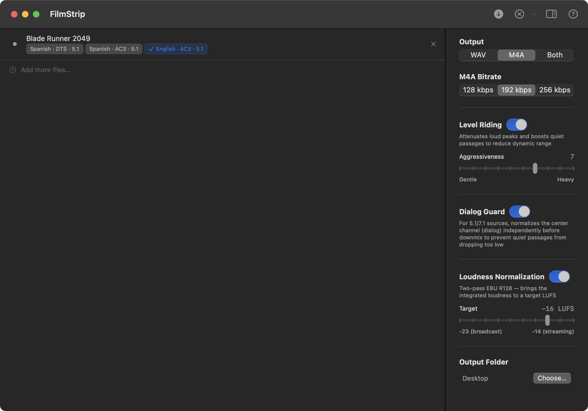
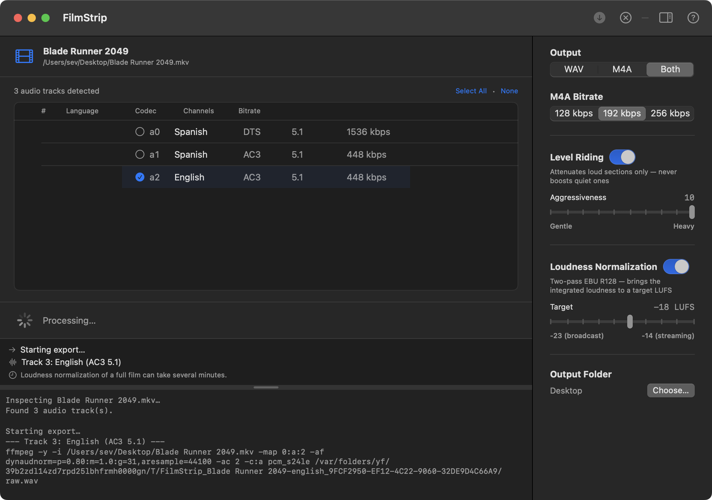
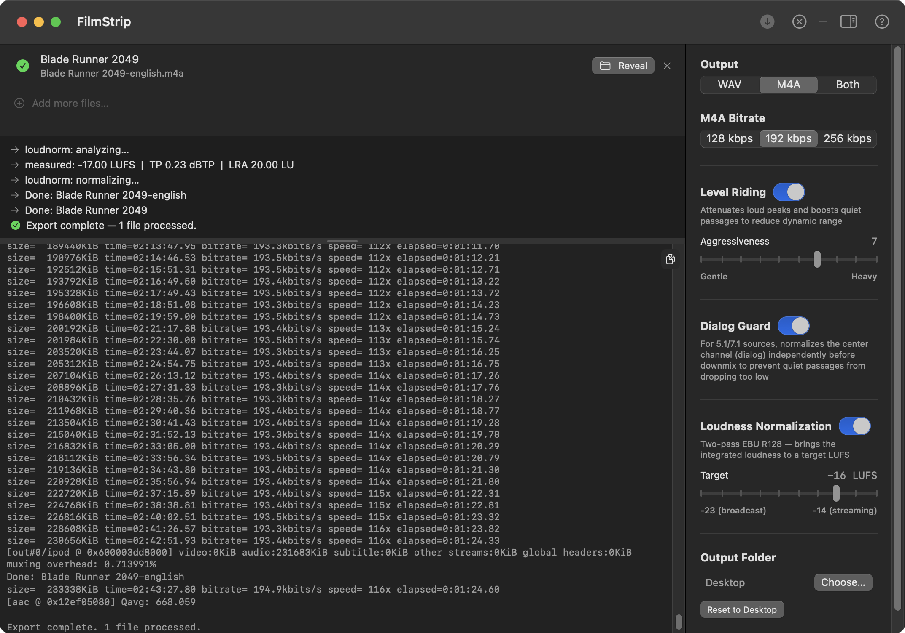

FilmStrip
Free · macOS · Film Audio
Film Audio Extraction for macOS
Drop a movie file. FilmStrip scans every audio track and auto-selects English — but any track or combination can be chosen. Export to clean WAV or M4A, ready to listen to a film without the video.
macOS 14 Sonoma or later · Apple Silicon & Intel · Free
Drag any video file onto the window. FilmStrip instantly scans every audio stream and lists them with language, codec, channels, bitrate, and embedded track titles when available.

Choose WAV, M4A, or both. Optionally apply dialog guard, level riding, and loudness normalization. The status pane shows each step as it runs — loudness analysis of a full film can take a few minutes.

Export complete. Both output files are listed with a Reveal in Finder button. The status pane shows the measured loudness, the normalization step, and the final confirmation.

Everything runs through bundled ffmpeg — no additional software required.
Scans every audio stream via ffprobe. Displays language, codec, channel layout, bitrate, and embedded track title metadata. Works with any format ffmpeg supports.
Automatically checks English tracks when a file loads. If none are tagged English, selects all tracks. You can override any selection before exporting.
Export to 24-bit WAV, AAC M4A at configurable bitrate (128/192/256 kbps), or both at once. Each selected track produces its own output file, named by language and track.
Dynamic range compression via dynaudnorm. Attenuates loud peaks and boosts quiet passages, closing the gap between the loudest and quietest moments. Aggressiveness is adjustable from gentle to heavy.
For 5.1 and 7.1 sources, normalizes the center channel (FC — where dialog lives) independently before the stereo downmix, using a fast-reacting window to catch brief quiet passages that full-mix level riding can miss. Has no effect on stereo sources.
Optional two-pass EBU R128 loudness normalization. Analyzes integrated loudness, then applies a precise linear gain to hit a configurable LUFS target. Range: −23 (broadcast) to −14 (streaming).
Mono tracks are upmixed to identical L+R stereo. Surround tracks (5.1, 7.1) are downmixed using standard channel matrices. A transparent brick-wall limiter is always applied after the downmix — hot multichannel sources like DTS can sum above 0 dBFS during fold-down without it. Output is always clean two-channel audio.
Select any combination of tracks and export them all in one pass. Each track becomes a separate file — useful for films that carry commentary or foreign-language dubs alongside the main track.
Every ffmpeg command and its output is visible in the log console, resizable by dragging. A clean status panel above shows human-readable progress for the current step.
When choosing a file to download, prefer AAC source tracks — they're the same codec FilmStrip produces for M4A output, so you skip a transcode generation entirely. E-AC3 (Dolby Digital Plus) is the next best choice at high bitrates, followed by AC3 (Dolby Digital). DTS offers no practical quality advantage over E-AC3. If a file carries both AAC and E-AC3, select the AAC track in FilmStrip.
Supported containers: MKV, MP4, MOV, AVI, M4V, TS, M2TS, WMV, WebM, MTS · Output: 24-bit WAV, 44.1 kHz
Extraction and resampling always run. Level riding and loudness normalization are optional and run in that order — the leveler tightens dynamics before loudness analysis so the measurement reflects the adjusted signal.
Dashed steps are optional. Dialog Guard (5.1/7.1 only) normalizes the center channel before the downmix. Surround tracks are downmixed to stereo during extraction. Peak limiting always runs after the downmix to catch inter-sample peaks from channel summation.
Bug report, feature request, or just found it useful? Send a note.
Message sent. Thanks.